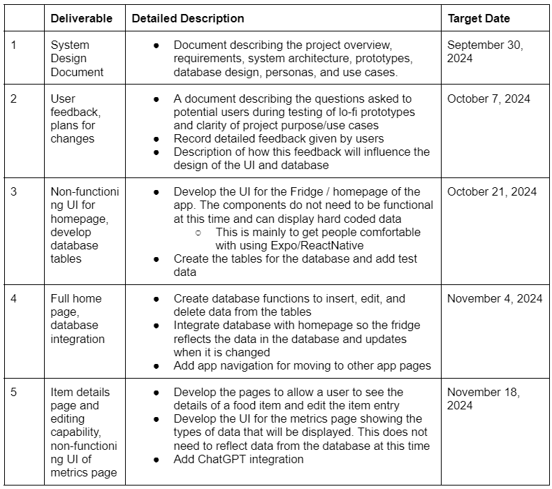
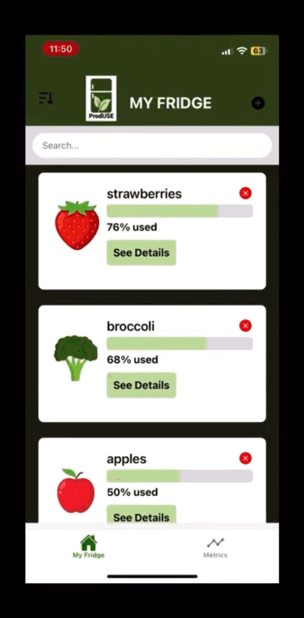
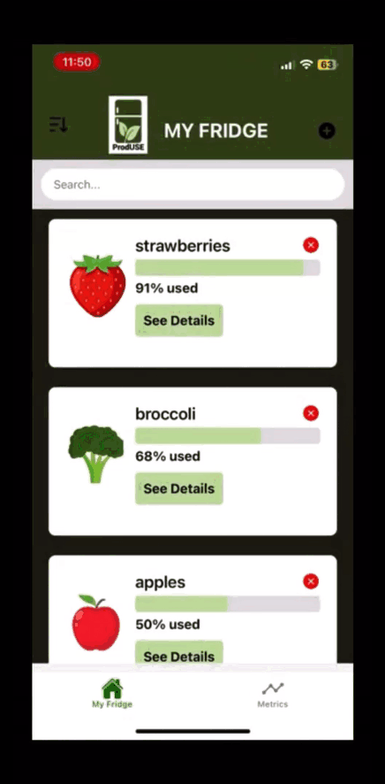
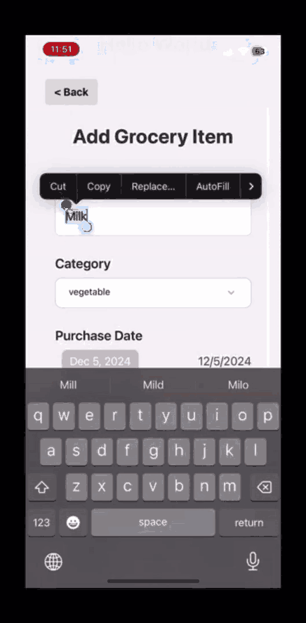
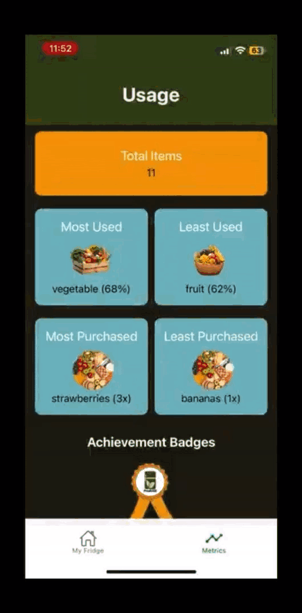

ProdUSE
How can we reduce food waste and save financial resources?

How can we reduce food waste and save financial resources?
ProdUSE is a cross-platform mobile application designed to help users reduce food waste and save money by creating a digital catalog of their fresh produce groceries. Developed a prototype over the course of three months as a capstone project by a team of five, the app aims to provide a simple, low-cost solution for individuals looking to adopt more sustainable habits—especially in response to the common time and financial barriers to sustainability.
I contributed to the frontend development using Expo, collaborated with my teammates to determine the app’s navigation structure, and provided implementation guidance throughout the design process.
Food waste is a major global problem that impacts the environment, economy, and food security. Every year, tons of edible food are thrown out—even as many people go hungry. This happens for a lot of reasons: grocery stores often overstock or promote overbuying, restaurants serve oversized portions or make inefficient menu choices, and even social habits, like how far people live from stores or the fear of running out—can contribute. Here are some key stats that show just how big the issue is:
In the United States, 30-40% of the food supply is lost or wasted, and it is estimated that 43-45% of food waste occurs at the consumer level [2].
Globally in 2021, the average person in high-income countries wasted 79 kilograms of food [3].
In part due to this, 8-10% of global greenhouse gas emissions are associated with food that is not consumed [3].
Hence, we questioned ourselves:
This is our initial timeline for the project. We also utilized a Gnatt Chart for a specific task breakdown assigned to each team members.

We made Software System Design Document for our first deliverable to purpose our idea to the stakeholders, primarily our professor. To help us determine the navigation of the user, we made a user flow diagram and Data Flow Diagrams. This also ensure that all UI screens are being completed while considering the scope of the project.
We have interviewed approximately ten potential users, mainly younger adults in Pittsburgh as our targeted audience. Here is what are the main point we have gathered during the interviews:
Our team created multiple wireframes to make sure that our design captures the usability and accessibility goals that were set. Here is a sneak peak of it!


We used the Expo framework to develop the app, which is built on the JavaScript React library. Expo was chosen because of its capabilities to build cross-platform native mobile apps and the large amount of free libraries available for creating more complicated components in apps. The backend of the app was a local SQLite database, which will be integrated/accessed through an Expo library using an SQLite API. The API endpoints will be the database tables. Unfortunately, the code is currently outdated and unable to be in use currently due to the expo updates. Due to limited time, we prioritized the important pages for the capstone presentation.
Here are some of the completed screens of the final product within our timeframe. Additional things that we have planned in mind are explained in the future consideration. These screens are screen recorded on iPhone as we tested the app development through Expo Go.
My Fridge page contains the list of ingredients that the user has entered within the app. Users can easily find their ingredient by searching or clicking on the filtering through by category and date. We wanted a design that to be more on the simplistic side to avoid too much clusters. It should also be easy to input the data into.
The user can easily update the % of the used item by clicking on "see detail" and "use item".

When completed to 100%, the item will automatically be taken off the My Fridge and be stored in the database under Metrics page.

User can add groceries by clicking on the plus sign on the very top right. The user can input the item name, category, how much brought, when it was purchased, and any additional notes.

The Metrics page makes a record of the ingredients that they have used, least used, most purchased, and least purchased. Users will be able to check their pattern of purchase and waste to make more sustainable, financial friendly decisions. They will also get badges as rewards.

If this project were to be continued, there are some additions and improvements we would make to the app:
This project was successful in achieving the goal of creating an easy-to-use tool to help people decrease their food waste. My main takeaways are that:
Scope creep can happen anytime during a project, even if the project has been planned well. We acknowledge our weaknesses and resources, and plan accordingly by prioritizing important functions.
As someone who never really handled front-end coding work, I had to do a lot of self-learning through online resources. The Expo and React Native documentations have been useful throughout my work, as well as guidance from my group members.
Communication was very good among the team members, which helps us address issue and feedback very early on. I believe this was the key to our success, as we have less roadblocks compared to other capstone teams.
We were able to effectively divide roles that fit yet challenged our individual skills, and each team member was willing and able to support the jobs of others. Every team member made vital contributions to the overall success of the project, and everyone was able to work individually and be trusted to complete their tasks for the team.